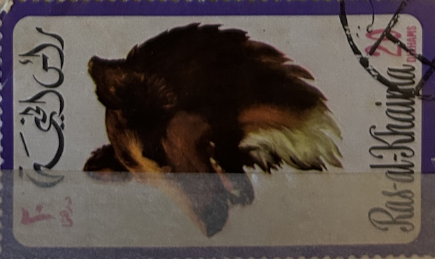
| SOURCE | TITLE| IMAGE MATCH | click to source page |
| eBay | Monkeys Chinese Stamps for sale | eBay | 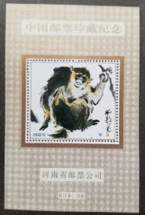 |
| SoundCloud | Stream Sapsal music | Listen to songs, albums, playlists for free on SoundCloud | 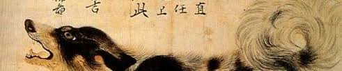 |
| 1992 Dogs Postage Stamp Set // Sahara OCC. RASD | Etsy | 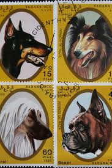 | |
| 4StampSales | Micronesia - 2006 Year of the Dog Stamp + Souvenir Sheet #682-3 | 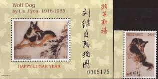 |
| k120102 【Zodiac Stamp】11Pcs Zodiac Stamp MNH 生肖邮票一共11枚one set 11pcs 全新全品MNH one set Rm9.9 （Buy 4set give Block4） | 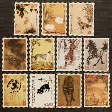 | |
| eBay | Sierra Leone 1996 - Chinese Lunar Calendar - Sheet of 12 Stamps Scott 1921 - MNH | eBay | 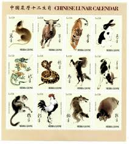 |
| Alamy | Bear and Crabs Shibata Zeshin Japanese. Bear and Crabs. Shibata Zeshin (Japanese, 1807–1891). Japan. Album leaf; lacquer on paper. Edo period (1615–1868). Paintings Stock Photo - Alamy | 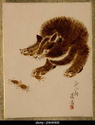 |
| eBay | Cancelled to Order/CTO Oman Pet & Farm Animal Postal Stamps for sale | eBay | 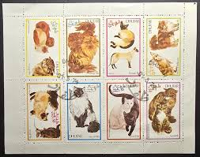 |
| Are these the same style? : r/CreditToTheArtist | 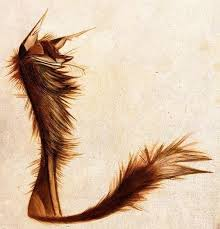 | |
| Wikipedia | Sapsali - Wikipedia | 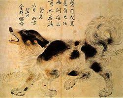 |
| eBay | JAPANESE PAINTING HANGING SCROLL JAPAN Raccoon Dog ANTIQUE Old AGED e615 | eBay | 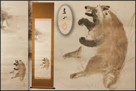 |
| Manekineko Ai | Maruyama Okyo Noren Tapestry Japanese door curtain 150x85cm Dog motif japan | 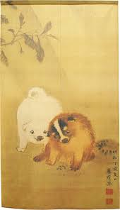 |
| eBay | MARUYAMA OKYO Noren Tapestry Japanese Door Curtain Dog Shigure Japan 150x85cm | eBay | 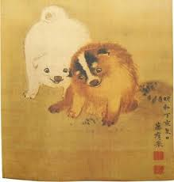 |
| TikTok | Exploring the Spirit of the Nine Tails in Japanese Mythology | TikTok | 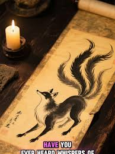 |
| Etsy | Eight 8 Canadian Wildlife 13c Stamps // Vintage Unused Postage Stamps // Face Value 1.04 - Etsy | 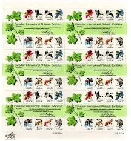 |
| doublehappinessmh.com | Painting Chinese Dragons – Double Happiness Studio MH | 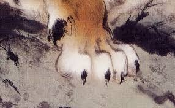 |
| eBay | Old Chinese Antique painting scroll About Dog on Rice Paper By Xu Beihong徐悲鸿 | eBay | 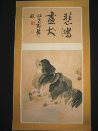 |
| Idyllic App | Discover the Fascinating World of Ferrets with AI-Generated Images - Idyllic Gallery | 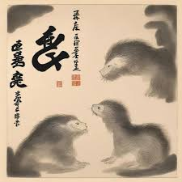 |
| Mystic Stamp | M11938 - 2007 75c Pig Painting by Liu Jiyou; Year of the Pig sheet of 4 - Mystic Stamp Company | 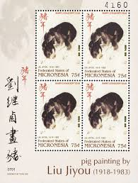 |
| Leland Little Auctions | A Chinese Painting of an Arhat on a Lion (Lot 1131 - Memorial Weekend AuctionMay 25, 2023, 9:00am) | 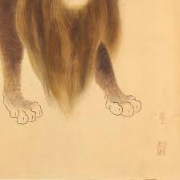 |
| Meditative Philately | Dog Stamp Cocker Spaniel Golden Retriever Pet Animal Serie Set MNH – Meditative Philately | 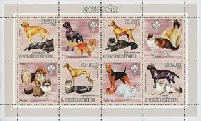 |
| 솔잎 🌲 2024 | 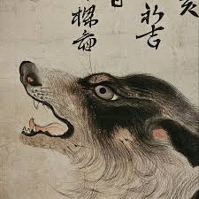 | |
| MutualArt | Gao Qifeng | OWL (1916) | MutualArt | 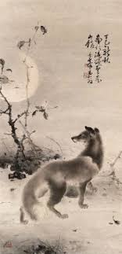 |
| Avion Thematics | South Africa 1986 25th Anniversary Of Republic Se-tenant Pair Unmounted Mint, SG 598a, stamps on constitutions | 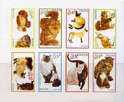 |
| eBay | 21in Chinese Antique painting scroll Rice Paper Dog By Xu Beihong | eBay | 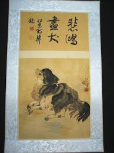 |
| Texas man nearly killed by wild animal he kept as a pet : r/texas | 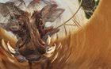 | |
| Alamy | Dogs of China & Japan in nature and art. Dogs; Animals in art. [from old catalog]; Art, Chinese. [from old catalog]. •ii. Please note that these images are extracted from scanned | 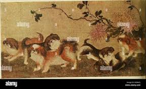 |
| Emmanuel Salazar (emmanuel9040) - Profile | Pinterest | 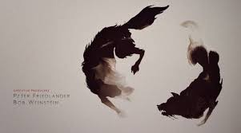 | |
| Fur Affinity | PILLOW VORE by bombchu -- Fur Affinity [dot] net | 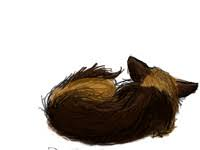 |
| Bridgeman Images | Katsushika Hokusai (1760-1849) (school Of)' images and/or videos results | 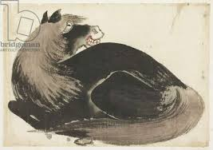 |
| eBay | W DHUFAR ST 024v MS CATS IMPERFORATED MINI SHEET | eBay | 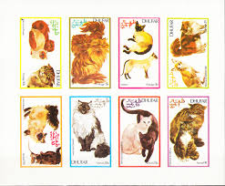 |
| eBay Australia | BEQUIA GRENADINES OF ST VINCENT STAMPS 2004 YEAR OF MONKEY SS MNH - MISC23-369 | eBay Australia | 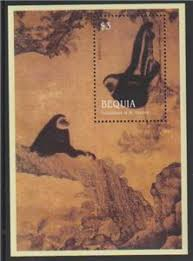 |
| Mobile Prints | Bird #44 Spiral Notebook by Jackie Russo - Mobile Prints | 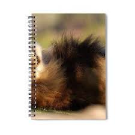 |
| The dogs of ancient China and the dogs of the Middle Ages. | 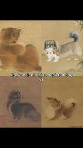 | |
| becksantiques.com | Three Mardi Gras Watercolors by Keith Pitzer - Beck's Antiques & Books |  |
| Wikimedia.org | File:Apes in a persimmon-tree.jpg - Wikimedia Commons | 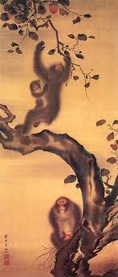 |
| eBay | DHUFAR- CATS -MINIATURE SHEET PERFORED MNH | eBay | 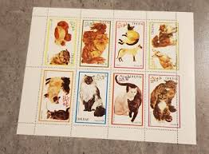 |
| eBay | Sierra Leone 1989 - Japanese Art - Set Of 8 Stamps - Scott #1054-61 - MNH | eBay | 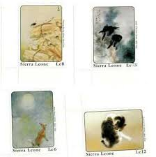 |
| Shawn Dall | Nine Tails Wolf Demon Coffee Mug by Shawn Dall - Shawn Dall | 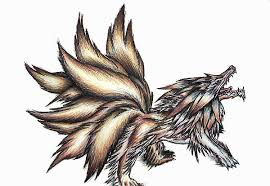 |
| PX Canvas Prints | 1874 Amazon Macas Indian Shrunken Head Canvas Print by Paul D Stewart / Science Photo Library - PX Canvas Prints | 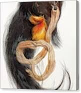 |
| 110 Mirko Hanak ideas | mirko hanak, mirko ilic illustrations, mirko cover art | 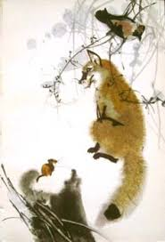 | |
| Etsy | Playful Cat Art Print, Traditional Chinese Wall Art (A4) - Etsy Australia | 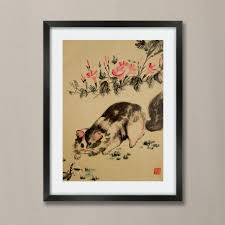 |
| Scribble Hub | The Boy raised in a Dark Elf Village - Chapter 1: From family to “family” ❤❤❤ | Scribble Hub | 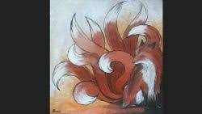 |
| Goodreads | Rabid: The Savage Spirit of Seneca Rain by Ivy Asher | Goodreads | 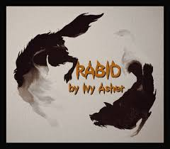 |
| Rising Phoenix Arts | 2018 is Year of the Earth Dog! — Rising Phoenix Arts | 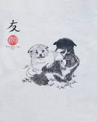 |
| MutualArt | Han Meilin | Fox (1979) | MutualArt | 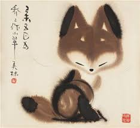 |
| Avion Thematics | Dhufar 1974 Cats 15b (French Birnan) Set Of 5 Imperf Progressive Colour Proofs Comprising 3 Individual Colours (red, Blue & Yellow) Plus 3 And All 4-colour Composites Unmounted Mint, stamps on animals cats | 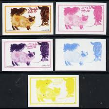 |
| Tumblr | qing dynasty on Tumblr | 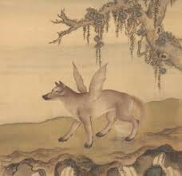 |
| WorthPoint | Jennifer Brereton | #500615598 |  |
| Discover 270 Japanese Chin Dogs and japanese chin dog ideas | japanese chin, chin, dogs and more | 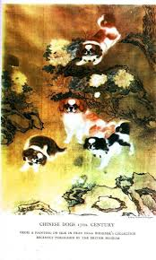 | |
| Dog | 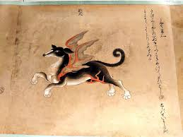 | |
| Etsy | Noren Tapestry Okyo Maruyama Dog With Kanji Made in Japan - Etsy | |
| Amazon.sg | Marie's Artist Chinese Watercolor Paint Set - Professional Quality High Pigment for Vivid Color Mixing - 18 x 12 ml Tubes; Assorted Colors : Amazon.sg: Toys | |
| eBay UK | Old Chinese Antique painting scroll Rice Paper Dog By Xu Beihong | eBay UK | |
| 240 The fox and the little tanuki ideas in 2026 | wolf comics, cute drawings, fox | ||
| nepaldog.com | Siamese Cat with King Charles by Baba – Nepal Dog | |
| eBay | Micronesia 2007 - Lunar Year of the Pig - Sheet of 4 Stamps - Scott #723 - MNH | eBay | |
| Invaluable.com | Sold at Auction: Boris Riab, Boris Riab Color Lithograph Depicting Dog | |
| Musixmatch | Damh the Bard - paroles de Taliesin's Song | Musixmatch | |
| Weebly | Club Crestados P.R. - My Crestado. |
{kind=link}